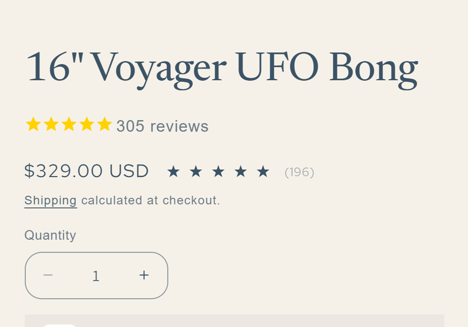
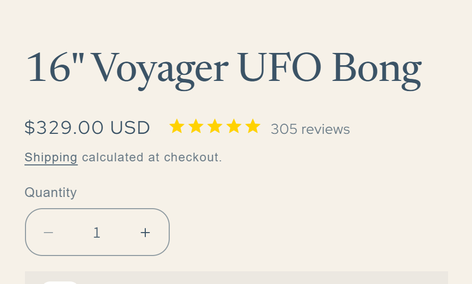
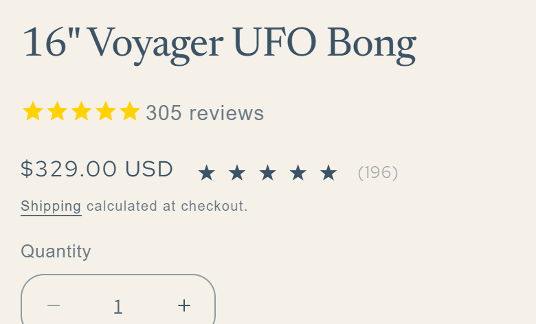
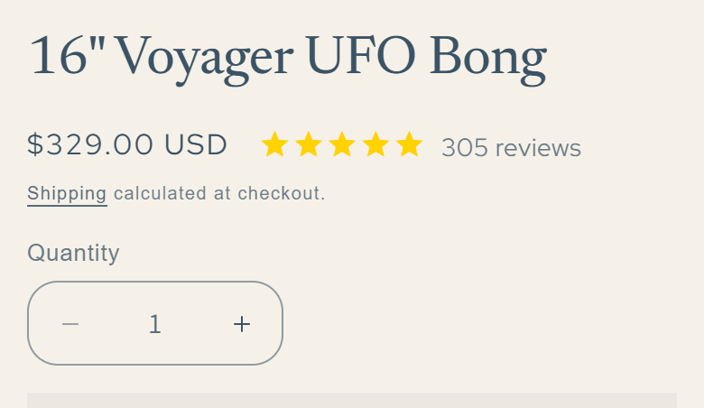
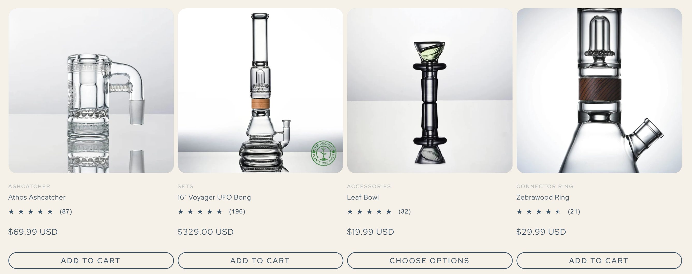
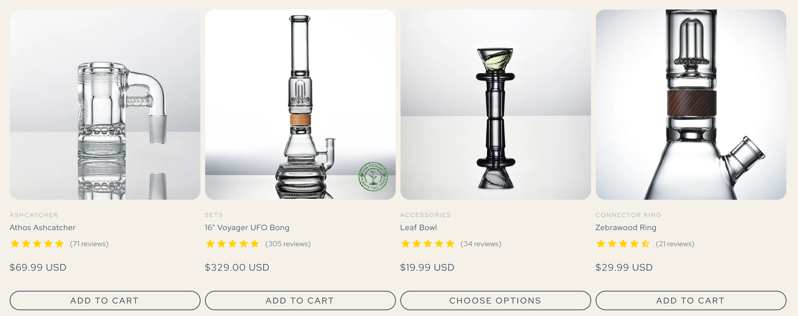
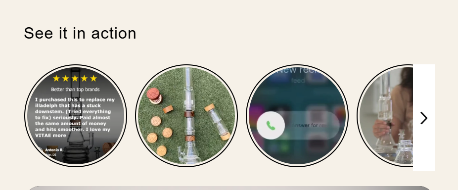
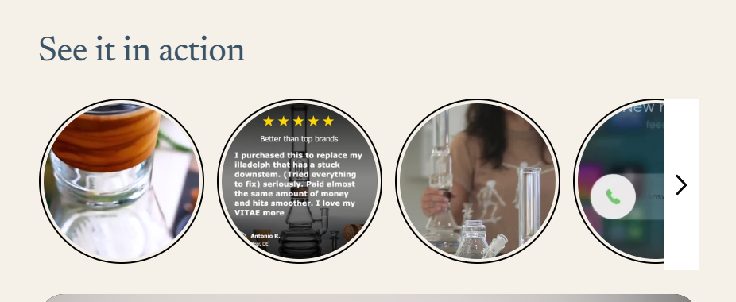

Feedback round · September 29, 2026
Each item shows the request, what changed, and a before and after on desktop and phone.
The yellow Stamped stars and review count now sit right after the price, on one line, and the default stars are gone. The rating appears once instead of twice, the count comes straight from Stamped so it matches your reviews section, and clicking it scrolls down to the reviews. Products that have no reviews yet show nothing, rather than a row of empty stars.




There is no need to add the separate Stamped star rating block to the product page anymore; the stars are built into the price line.
So every number matches, the product cards on Shop All, the category tabs and "Completes your build" now use the same yellow Stamped stars and review counts, and so does the product preview on the Build Your Own page.


The counts come from Stamped exactly as it reports them. Stamped groups some related products' reviews together; for example, the Voyager Base shares the 16" Voyager UFO Bong's 305 reviews. If you would rather each product show only its own reviews, that is a product grouping setting inside Stamped.
Yes. The "See it in action" title now uses the same serif as the other section headings on the page, and the video names use the site's text font. This follows the site's fonts automatically, so nothing needs changing in Tolstoy.

